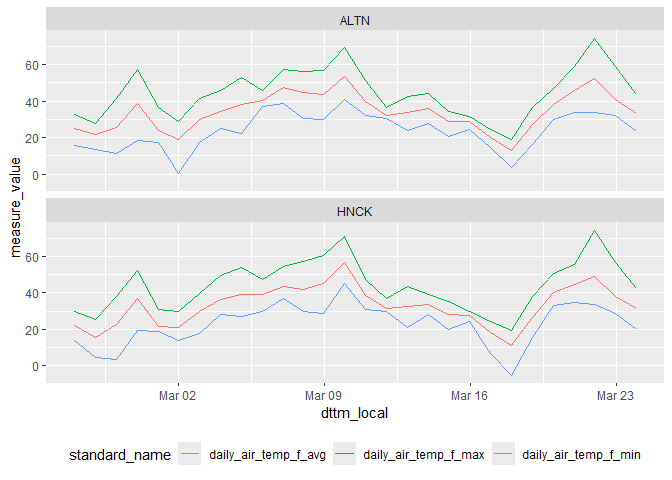

rwisconet provides an interface to the Wisconet v1 API (https://wisconet.wisc.edu/api/v1). Supports fetching station metadata, available field definitions, and observation data for one or more stations.
Basic Usage
Initialize the client
Creating a new client automatically fetches station and field metadata from the API. Timestamps are parsed using your system timezone by default.
suppressPackageStartupMessages({
library(tidyverse)
library(rwisconet)
})
wn <- Wisconet$new()
wn
#> <Wisconet API>
#> Timezone: America/Chicago
#> Stations: 78
#> Fields: 253You can skip the initial metadata fetch or use a different timezone. Normally you would not do this.
wn <- Wisconet$new(timezone = "US/Eastern", fetch_on_init = FALSE)Explore stations
The station metadata table is stored in wn$stations. You can refresh it at any time with wn$get_stations().
wn$stations
#> # A tibble: 78 × 16
#> id station_id station_slug station_name latitude longitude elevation
#> <int> <chr> <chr> <chr> <dbl> <dbl> <dbl>
#> 1 47 ANGO antigo Antigo 45.2 -89.1 461
#> 2 7 ALTN arlington Arlington 43.3 -89.4 304
#> 3 45 RTHR arthur Arthur 45.0 -91.2 307
#> 4 36 BBCK babcock Babcock 44.3 -90.3 296
#> 5 74 BYFD bayfield Bayfield 46.8 -91.0 321
#> 6 31 BLCR black_creek Black Creek 44.5 -88.4 238
#> 7 19 WCRS black_river_falls Black River … 44.2 -90.7 262
#> 8 82 BCVL blanchardville Blanchardvil… 42.9 -89.8 338
#> 9 65 BGHM brigham Brigham 43.0 -89.8 366
#> 10 30 BRLN brillion Brillion 44.1 -88.1 253
#> # ℹ 68 more rows
#> # ℹ 9 more variables: location <chr>, station_timezone <chr>, city <chr>,
#> # county <chr>, region <chr>, state <chr>, earliest_api_date <date>,
#> # madis_id <chr>, climate_division <chr>Find the nearest station(s) to a given point:
wn$find_nearest_station(lat = 43.07, lng = -89.40, n = 3)
#> # A tibble: 3 × 5
#> station_id station_name latitude longitude dist_km
#> <chr> <chr> <dbl> <dbl> <dbl>
#> 1 OJNR Verona 43.0 -89.5 12.2
#> 2 ALTN Arlington 43.3 -89.4 25.3
#> 3 GLCP Porter 42.8 -89.2 36.3Display all stations on an interactive map (requires the leaflet package):
Explore available fields
The fields table is stored in wn$fields. Use find_fields() to filter by measure type and/or collection frequency:
# List all available fields
wn$fields
#> # A tibble: 253 × 12
#> id standard_name use_for measure_type qualifier source_field data_type
#> <int> <chr> <chr> <chr> <chr> <chr> <chr>
#> 1 1 5min_air_temp_f_… "" Air Temp avg airtemp_c_a… float
#> 2 2 60min_air_temp_f… "" Air Temp avg airtemp_c_a… float
#> 3 3 daily_air_temp_f… "" Air Temp avg WN_calc float
#> 4 4 daily_air_temp_f… "" Air Temp max airtemp_c_m… float
#> 5 6 daily_air_temp_f… "" Air Temp min airtemp_c_m… float
#> 6 7 60min_battery_v_… "" Battery avg battery_v_a… float
#> 7 8 daily_battery_v_… "" Battery min battery_v_m… float
#> 8 9 5min_dew_point_f… "" Dew Point avg dewpointtem… float
#> 9 10 60min_dew_point_… "" Dew Point avg dewpointtem… float
#> 10 11 daily_dew_point_… "" Dew Point max dewpointtem… float
#> # ℹ 243 more rows
#> # ℹ 5 more variables: source_units <chr>, final_units <chr>,
#> # units_abbrev <chr>, conversion_type <chr>, collection_frequency <chr>
# Show air temp fields
wn$find_fields(type = "Air Temp")
#> # A tibble: 9 × 12
#> id standard_name use_for measure_type qualifier source_field data_type
#> <int> <chr> <chr> <chr> <chr> <chr> <chr>
#> 1 1 5min_air_temp_f_a… "" Air Temp avg airtemp_c_a… float
#> 2 2 60min_air_temp_f_… "" Air Temp avg airtemp_c_a… float
#> 3 3 daily_air_temp_f_… "" Air Temp avg WN_calc float
#> 4 4 daily_air_temp_f_… "" Air Temp max airtemp_c_m… float
#> 5 6 daily_air_temp_f_… "" Air Temp min airtemp_c_m… float
#> 6 60 daily_air_temp_f_… "" Air Temp max_time airtemp_c_t… integer
#> 7 61 daily_air_temp_f_… "" Air Temp min_time airtemp_c_t… integer
#> 8 108 5min_heat_index_f… "" Air Temp avg calc_heat_i… float
#> 9 113 5min_wind_chill_f… "" Air Temp avg calc_wind_c… float
#> # ℹ 5 more variables: source_units <chr>, final_units <chr>,
#> # units_abbrev <chr>, conversion_type <chr>, collection_frequency <chr>
# show daily fields
wn$find_fields(freq = "daily")
#> # A tibble: 167 × 12
#> id standard_name use_for measure_type qualifier source_field data_type
#> <int> <chr> <chr> <chr> <chr> <chr> <chr>
#> 1 3 daily_air_temp_f… "" Air Temp avg WN_calc float
#> 2 4 daily_air_temp_f… "" Air Temp max airtemp_c_m… float
#> 3 6 daily_air_temp_f… "" Air Temp min airtemp_c_m… float
#> 4 8 daily_battery_v_… "" Battery min battery_v_m… float
#> 5 11 daily_dew_point_… "" Dew Point max dewpointtem… float
#> 6 12 daily_dew_point_… "" Dew Point min dewpointtem… float
#> 7 15 daily_rain_in_tot "" Rain total rain_mm_tot… float
#> 8 20 daily_relative_h… "" Relative Hu… max relhum_max@… float
#> 9 21 daily_relative_h… "" Relative Hu… min relhum_min@… float
#> 10 23 daily_soil_moist… "" Soil Moistu… max@4in soilmstr_10… float
#> # ℹ 157 more rows
#> # ℹ 5 more variables: source_units <chr>, final_units <chr>,
#> # units_abbrev <chr>, conversion_type <chr>, collection_frequency <chr>
# show air temp fields with 5 minute collection frequency
wn$find_fields(type = "Air Temp", freq = "5min")
#> # A tibble: 3 × 12
#> id standard_name use_for measure_type qualifier source_field data_type
#> <int> <chr> <chr> <chr> <chr> <chr> <chr>
#> 1 1 5min_air_temp_f_a… "" Air Temp avg airtemp_c_a… float
#> 2 108 5min_heat_index_f… "" Air Temp avg calc_heat_i… float
#> 3 113 5min_wind_chill_f… "" Air Temp avg calc_wind_c… float
#> # ℹ 5 more variables: source_units <chr>, final_units <chr>,
#> # units_abbrev <chr>, conversion_type <chr>, collection_frequency <chr>Fetch observations
Single station
Use get_measures() to fetch data for one station. Provide a station ID, a vector of field standard_name values, and a time window. Returned data is formatted as tibble with station and measure metadata.
measures_5min <- c(
"5min_air_temp_f_avg",
"5min_relative_humidity_pct_avg",
"5min_wind_speed_mph_avg"
)
obs <- wn$get_measures(
stn_id = "HNCK", # Hancock
fields = measures_5min,
start_time = now() - days(1),
end_time = now()
)
#> GET ==> HNCK: 2026-03-23 16:27:29.603636 to 2026-03-24 16:27:29.605551
#> Received 286 observations in 0.353s
obs
#> # A tibble: 858 × 32
#> id station_id station_slug station_name latitude longitude elevation
#> <int> <chr> <chr> <chr> <dbl> <dbl> <dbl>
#> 1 1 HNCK hancock Hancock 44.1 -89.5 333
#> 2 1 HNCK hancock Hancock 44.1 -89.5 333
#> 3 1 HNCK hancock Hancock 44.1 -89.5 333
#> 4 1 HNCK hancock Hancock 44.1 -89.5 333
#> 5 1 HNCK hancock Hancock 44.1 -89.5 333
#> 6 1 HNCK hancock Hancock 44.1 -89.5 333
#> 7 1 HNCK hancock Hancock 44.1 -89.5 333
#> 8 1 HNCK hancock Hancock 44.1 -89.5 333
#> 9 1 HNCK hancock Hancock 44.1 -89.5 333
#> 10 1 HNCK hancock Hancock 44.1 -89.5 333
#> # ℹ 848 more rows
#> # ℹ 25 more variables: location <chr>, station_timezone <chr>, city <chr>,
#> # county <chr>, region <chr>, state <chr>, earliest_api_date <date>,
#> # madis_id <chr>, climate_division <chr>, collection_time <int>, dttm <dttm>,
#> # dttm_local <dttm>, date <date>, measure_id <int>, measure_value <dbl>,
#> # standard_name <chr>, measure_type <chr>, qualifier <chr>,
#> # source_field <chr>, data_type <chr>, source_units <chr>, …Multiple stations
Use get_measures_stations() to fetch data for a specific set of stations in parallel:
obs <- wn$get_measures_stations(
stn_ids = c("ALTN", "HNCK"), # Arlington, Hancock
fields = measures_5min,
start_time = now() - days(1),
end_time = now()
)
#> Fetching 2 stations
#> Done: 2/2 stations returned data in 0.4s
obs
#> # A tibble: 1,719 × 32
#> id station_id station_slug station_name latitude longitude elevation
#> <int> <chr> <chr> <chr> <dbl> <dbl> <dbl>
#> 1 7 ALTN arlington Arlington 43.3 -89.4 304
#> 2 7 ALTN arlington Arlington 43.3 -89.4 304
#> 3 7 ALTN arlington Arlington 43.3 -89.4 304
#> 4 7 ALTN arlington Arlington 43.3 -89.4 304
#> 5 7 ALTN arlington Arlington 43.3 -89.4 304
#> 6 7 ALTN arlington Arlington 43.3 -89.4 304
#> 7 7 ALTN arlington Arlington 43.3 -89.4 304
#> 8 7 ALTN arlington Arlington 43.3 -89.4 304
#> 9 7 ALTN arlington Arlington 43.3 -89.4 304
#> 10 7 ALTN arlington Arlington 43.3 -89.4 304
#> # ℹ 1,709 more rows
#> # ℹ 25 more variables: location <chr>, station_timezone <chr>, city <chr>,
#> # county <chr>, region <chr>, state <chr>, earliest_api_date <date>,
#> # madis_id <chr>, climate_division <chr>, collection_time <int>, dttm <dttm>,
#> # dttm_local <dttm>, date <date>, measure_id <int>, measure_value <dbl>,
#> # standard_name <chr>, measure_type <chr>, qualifier <chr>,
#> # source_field <chr>, data_type <chr>, source_units <chr>, …Specific start/end times per station
You can also pass a named list of per-station start and end times if you need to collect data for different timeframes by station.
measures_daily <- c(
"daily_air_temp_f_min",
"daily_air_temp_f_avg",
"daily_air_temp_f_max"
)
starts <- list(
ALTN = now() - months(2),
HNCK = now() - months(1)
)
ends <- lapply(starts, \(x) x + days(7))
obs <- wn$get_measures_stations(
stn_ids = names(starts),
fields = measures_daily,
start_time = starts,
end_time = ends
)
#> Fetching 2 stations
#> Done: 2/2 stations returned data in 0.4s
obs
#> # A tibble: 42 × 32
#> id station_id station_slug station_name latitude longitude elevation
#> <int> <chr> <chr> <chr> <dbl> <dbl> <dbl>
#> 1 7 ALTN arlington Arlington 43.3 -89.4 304
#> 2 7 ALTN arlington Arlington 43.3 -89.4 304
#> 3 7 ALTN arlington Arlington 43.3 -89.4 304
#> 4 7 ALTN arlington Arlington 43.3 -89.4 304
#> 5 7 ALTN arlington Arlington 43.3 -89.4 304
#> 6 7 ALTN arlington Arlington 43.3 -89.4 304
#> 7 7 ALTN arlington Arlington 43.3 -89.4 304
#> 8 7 ALTN arlington Arlington 43.3 -89.4 304
#> 9 7 ALTN arlington Arlington 43.3 -89.4 304
#> 10 7 ALTN arlington Arlington 43.3 -89.4 304
#> # ℹ 32 more rows
#> # ℹ 25 more variables: location <chr>, station_timezone <chr>, city <chr>,
#> # county <chr>, region <chr>, state <chr>, earliest_api_date <date>,
#> # madis_id <chr>, climate_division <chr>, collection_time <int>, dttm <dttm>,
#> # dttm_local <dttm>, date <date>, measure_id <int>, measure_value <dbl>,
#> # standard_name <chr>, measure_type <chr>, qualifier <chr>,
#> # source_field <chr>, data_type <chr>, source_units <chr>, …All active stations
Use get_measures_all() to query every active station:
obs <- wn$get_measures_all(
fields = measures_daily,
start_time = today() - days(7),
end_time = today()
)
#> Fetching 78 stations
#> Parsing responses ■■■■■■■■■■■■■■■■■■■■■■■■■■■■■■ 97% | ETA: 0s Done: 78/78 stations returned data in 2.8s
obs
#> # A tibble: 1,635 × 32
#> id station_id station_slug station_name latitude longitude elevation
#> <int> <chr> <chr> <chr> <dbl> <dbl> <dbl>
#> 1 47 ANGO antigo Antigo 45.2 -89.1 461
#> 2 47 ANGO antigo Antigo 45.2 -89.1 461
#> 3 47 ANGO antigo Antigo 45.2 -89.1 461
#> 4 47 ANGO antigo Antigo 45.2 -89.1 461
#> 5 47 ANGO antigo Antigo 45.2 -89.1 461
#> 6 47 ANGO antigo Antigo 45.2 -89.1 461
#> 7 47 ANGO antigo Antigo 45.2 -89.1 461
#> 8 47 ANGO antigo Antigo 45.2 -89.1 461
#> 9 47 ANGO antigo Antigo 45.2 -89.1 461
#> 10 47 ANGO antigo Antigo 45.2 -89.1 461
#> # ℹ 1,625 more rows
#> # ℹ 25 more variables: location <chr>, station_timezone <chr>, city <chr>,
#> # county <chr>, region <chr>, state <chr>, earliest_api_date <date>,
#> # madis_id <chr>, climate_division <chr>, collection_time <int>, dttm <dttm>,
#> # dttm_local <dttm>, date <date>, measure_id <int>, measure_value <dbl>,
#> # standard_name <chr>, measure_type <chr>, qualifier <chr>,
#> # source_field <chr>, data_type <chr>, source_units <chr>, …Handling received data
You can simplify the returned data by selecting only a few important data columns.
obs <- wn$get_measures_stations(
stn_ids = c("ALTN", "HNCK"), # Arlington, Hancock
fields = measures_daily,
start_time = now() - months(1),
end_time = now()
)
#> Fetching 2 stations
#> Done: 2/2 stations returned data in 0.6s
select_obs <- obs |>
select(station_id, dttm_local, date, standard_name, measure_value)
obs_wide <- select_obs |>
pivot_wider(names_from = standard_name, values_from = measure_value)
obs_wide
#> # A tibble: 56 × 6
#> station_id dttm_local date daily_air_temp_f_avg
#> <chr> <dttm> <date> <dbl>
#> 1 ALTN 2026-02-25 00:00:00 2026-02-25 25.2
#> 2 ALTN 2026-02-26 00:00:00 2026-02-26 21.6
#> 3 ALTN 2026-02-27 00:00:00 2026-02-27 25.7
#> 4 ALTN 2026-02-28 00:00:00 2026-02-28 39
#> 5 ALTN 2026-03-01 00:00:00 2026-03-01 23.7
#> 6 ALTN 2026-03-02 00:00:00 2026-03-02 19
#> 7 ALTN 2026-03-03 00:00:00 2026-03-03 29.7
#> 8 ALTN 2026-03-04 00:00:00 2026-03-04 34.2
#> 9 ALTN 2026-03-05 00:00:00 2026-03-05 38.3
#> 10 ALTN 2026-03-06 00:00:00 2026-03-06 40.5
#> # ℹ 46 more rows
#> # ℹ 2 more variables: daily_air_temp_f_max <dbl>, daily_air_temp_f_min <dbl>Generate a simple figure from the returned data:
select_obs |>
ggplot(aes(x = dttm_local, y = measure_value, color = standard_name)) +
geom_line() +
facet_wrap(~station_id, ncol = 1) +
theme(legend.position = "bottom")
Development
Common tasks:
# run tests
testthat::test_dir("tests")
# build documentation
devtools::document()
# check package
devtools::check()
# build package
devtools::build()
# build readme from Rmd
devtools::build_readme()
# build a pdf manual
devtools::build_manual()